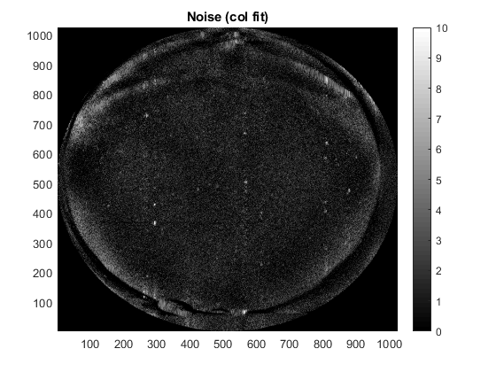
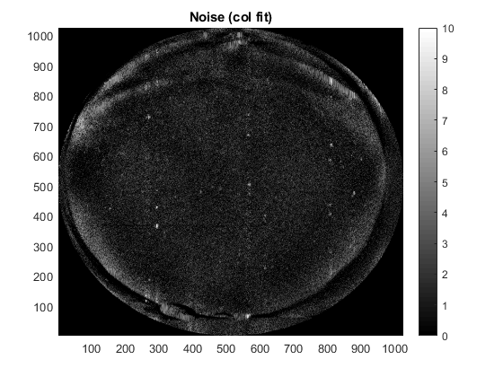

Contents
- This Routines Demos the steps taken for all sky calibration
- Toggle figures on or off
- Step 1: Collect star catalogue
- Step 2: Collect information about the camera
- Step 3: Calculate star positions at camera location
- Step 4: Get Image/ FITS File or Matrix
- Step 5: Extract stars
- Step 6: Calibrate stars from camera with stars from the star chart
- Step 7: Transform the stars identified from image to new Az El values
- Step 7: Rotate the initial Az-El stencil according to the above calibrated parameters
- Functions
- Image should be post all processing
- Restricting the field of view.
- Assuming fish eye
- Sorting the stars based on its magnitude.
This Routines Demos the steps taken for all sky calibration
clear all;
Toggle figures on or off
toggle = 1; % ON % toggle = 0; % OFF
Step 1: Collect star catalogue
starCatFITS = [initialize_root_path,filesep,'energy-height-conversion',... filesep,'Tools',filesep,'External Tools',filesep,... 'skymap',filesep,'hipparcos_extended_catalogue_J2000.fit']; stars = get_star_catalogue(starCatFITS); % Star catalogue [INPUT]
Step 2: Collect information about the camera
% Automatically calculating the darkest frame, so that we have a clearer sky % %%?? fileStr = 'C:\Users\nithin\Downloads\20080326.001_bc_15sec-full_v2.h5'; [totalIntensity,timeArr]=estimate_darkest_frame(fileStr); [val,indx]=min(totalIntensity); timeStr = datestr(timeArr(indx)); % Get the time of the image time = timeArr(indx); % [INPUT] % Get camera location dasc.sensorLoc = h5read(fileStr,'/DASC/sensorloc'); % [INPUT]
%%?? Get initial Azimuth - Elevation
dasc.az = modify_matrix_size((h5read(fileStr,'/DASC/azCalData'))',1024,1024); dasc.el = modify_matrix_size((h5read(fileStr,'/DASC/elCalData'))',1024,1024); dasc.az(dasc.az==0) = nan; dasc.el(dasc.az==0) = nan;
Step 3: Calculate star positions at camera location
% Approximate star position can be calculated using this function [stars.az,stars.el] = RADec2AzEl(rad2deg(stars.RA),rad2deg(stars.DEC),... dasc.sensorLoc(1),dasc.sensorLoc(2),datestr(time,'yyyy/mm/dd HH:MM:ss')); % Storing the location of a known star. In this case: the pole star . polarisIndx = find(stars.HIP==11767); % The index of polaris star in the star catalogue polaris.az = stars.az(polarisIndx); polaris.el = stars.el(polarisIndx); % A more accurate calculation can be made using the following function % It takes more time though. [polaris.azAccurate,polaris.elAccurate] = get_star_az_el... (stars.RA(polarisIndx),stars.DEC(polarisIndx),... stars.pmRA(polarisIndx),stars.pmDEC(polarisIndx),stars.parallax(polarisIndx),... stars.RV(polarisIndx),time,deg2rad(dasc.sensorLoc(1)),deg2rad(dasc.sensorLoc(2)),dasc.sensorLoc(3));
Step 4: Get Image/ FITS File or Matrix
asiPath = 'C:\Users\nithin\Documents\GitHub\LargeFiles\DASC\20080326\'; asi1File = 'PKR_DASC_0000_20080326_103958.000.FITS'; image1 = fitsread([asiPath,asi1File]); %% [INPUT] display_image(toggle,image1,[],'Original Image');
Step 4.1. Remove hot pixels If one needs to remove hot pixels one can attach another image that is separated in time
asi2File = 'PKR_DASC_0000_20080326_133018.000.FITS'; image2 = fitsread([asiPath,asi2File]); [hotPixels] = identify_hot_pixels(image1, image2, 10); % % image1(logical(hotPixels(:))) = nan; display_image(toggle,hotPixels,[],'Hot pixles'); % display_image(toggle,image1,[],'Hot pixles removed');
Step 4.2. Remove background
[image1BkgRem,backgroundRow, imRowNoise, pRow, muRow, a] = remove_background(image1,5); display_image(toggle,image1BkgRem,[0 100],'Image with background removed from row'); display_image(toggle,backgroundRow, [200 800], 'Background with stars removed (After Row fits)'); display_image(toggle,imRowNoise,[0 10],'Noise (row fit)'); [image1BkgRem,background1, imColNoise] = remove_background(image1BkgRem'); image1BkgRem = image1BkgRem'; imColNoise = imColNoise'; background1 = background1'; %Background of the image i.e. without the stars. display_image(toggle, image1BkgRem, [0 100], 'Image with background removed from row and column'); display_image(toggle,background1, [0 50], 'Background with stars removed (After Row and Col fits)'); display_image(toggle,imColNoise,[0 10],'Noise (col fit)');
 
 Step 4.3. Calculate noise at each pixel
fnoise = @(x) nanstd(x(:)); totalNoise = imColNoise+imRowNoise; totalNoise(totalNoise==0)=nan; sigma_n = nlfilter(totalNoise,[9 9],fnoise); % calculating std deviation from neighbouring pixels! display_image(toggle, sigma_n, [0 10], '\sigma_n Noise at each pixel');
Step 4.4. Removing noise spikes
image1NoiseRem = remove_noise_spikes(image1BkgRem, sigma_n);
display_image(toggle, image1NoiseRem, [0 100], 'Image with bkg and noise removed');
Step 4.5. Removing hot pixels See step 4.1
image1BkgRem(logical(hotPixels(:)))= nan;
Step 5: Extract stars
starImage = faint_star_extracter(image1BkgRem, sigma_n); starImage(starImage <= 20) = 0;
display_image(toggle, starImage, [0 100], 'Stars extracted');
Step 5.1. Extract stars
imstarStruct = extract_stars(starImage); dascstar = filter_stars(imstarStruct, 22.5); % remove points in the corners of the image if toggle == 1 hold on; scatter(dascstar.location(:,1), dascstar.location(:,2),20*dascstar.brightness, 'r'); end
Step 5.2. Get real stars in the above format
realstar = get_actual_stars(stars, 22.5, 4, 0, 0, 0, 1);
Step 6: Calibrate stars from camera with stars from the star chart
[dascstarCal,calPar,fval] = calibrate_stars(realstar,dascstar,dasc.az, dasc.el);
Optimization terminated: average change in the penalty fitness value less than options.FunctionTolerance and constraint violation is less than options.ConstraintTolerance. Optimization terminated: average change in the penalty fitness value less than options.FunctionTolerance and constraint violation is less than options.ConstraintTolerance. Optimization terminated: average change in the penalty fitness value less than options.FunctionTolerance and constraint violation is less than options.ConstraintTolerance. Optimization terminated: average change in the penalty fitness value less than options.FunctionTolerance and constraint violation is less than options.ConstraintTolerance. Optimization terminated: average change in the penalty fitness value less than options.FunctionTolerance and constraint violation is less than options.ConstraintTolerance.
if toggle == 1 figure; plot_aer_stars(realstar.locationAzEl(:,1), realstar.locationAzEl(:,2),... realstar.brightness*50, 'r', 0, 0, 0, 1); hold on; plot_aer_stars(dascstarCal.locationAzEl(:,1), dascstarCal.locationAzEl(:,2),... dascstarCal.brightness*50, 'c', calPar(1), calPar(2), calPar(3), calPar(4)); end
Step 7: Transform the stars identified from image to new Az El values
[dascStarAz, dascStarEl] = calculate_new_AzEl(dascstarCal.locationAzEl(:,1),... dascstarCal.locationAzEl(:,2),calPar); if toggle == 1 hold on; plot_aer_stars(dascStarAz, dascStarEl, dascstarCal.brightness*30, 'g', 0, 0, 0, 1); end
Step 7: Rotate the initial Az-El stencil according to the above calibrated parameters
[dasc.azCal, dasc.elCal] = calculate_new_AzEl(dasc.az,dasc.el,calPar); if toggle == 1 indx = dasc.elCal>0; figure; dsign = -1; plot_DASC_aer(image1(indx), dasc.azCal(indx), dasc.elCal(indx), 1024, dsign); colorbar; colormap(viridis); xlim([-120,+120]); ylim([-120,+120]); hold on; plot_grid_aer([0, 90], 22.5, 'm'); caxis([300 450]); hold on; plot_aer_stars(realstar.locationAzEl(:,1), realstar.locationAzEl(:,2),... realstar.brightness*50, 'c', 0, 0, 0, dsign); plot_aer_stars(dascStarAz, dascStarEl, dascstarCal.brightness*30, 'r', 0, 0, 0, dsign); plot_star_names(realstar, 8, 'w', 0, 0, 0, dsign); title(timeStr); end
Functions
function [totalIntensity,timeArr]=estimate_darkest_frame(h5FileStr) asi = permute(h5read(h5FileStr,'/DASC/ASI'),[3 2 1]); timeArr = unixtime2matlab((h5read(h5FileStr,'/DASC/time'))'); totalIntensity = sum(sum(asi,3),2); end function display_image(toggle,image,clim,titleStr) if toggle==1 if nargin<4 titleStr = ''; end figure; h=pcolor(image); set(h,'EdgeColor','none'); colorbar; colormap(get_colormap('k','w')) title(titleStr); if ~(nargin<3) && ~isempty(clim) caxis(clim); end end end function [hotPixels] = identify_hot_pixels(image1, image2, threshold) if nargin<3 threshold = 2; end temp = image1 - image2; temp2 = temp; hotPixels=zeros(size(temp2)); hotPixels(abs(temp2)<=threshold) = 1; end function [ASINew, background, ASINoise, pRow, muRow, a] = remove_background(ASI, nPoly) % Remove background along the row if nargin < 2 nPoly = 3; end % ASINew, background rowIndx = 1:1:size(ASI,2); colIndx = 1:1:size(ASI,1); ASINew = zeros(size(ASI)); background = zeros(size(ASI)); ASItemp = ASI; ASINoise = zeros(size(ASI)); pRow = zeros([length(rowIndx),nPoly+1]); % First iteration for ifit = 1:2 for i = rowIndx lchord = sqrt(512.^2-(abs(512-i)).^2); fitRangeIndx =512-round(lchord)+1:1:512+round(lchord); x = colIndx(fitRangeIndx); y = ASItemp(i,fitRangeIndx); if length(fitRangeIndx)>10 pRow(i,:)=polyfit(x,y,nPoly); end muRow(i,:)=mean(y); stdRow(i,:) = std(y); a(i).fitRangeIndx = fitRangeIndx; background(i,fitRangeIndx) = polyval(pRow(i,:),colIndx(fitRangeIndx)); if ifit==1 brightStarIndx = ASItemp(i,:) > (background(i,:)+1*stdRow(i,:)); if length(find(brightStarIndx)>0) ASItemp(i,brightStarIndx) = nan; ASItemp(i,fitRangeIndx) = interp_nans(ASItemp(i,fitRangeIndx)')'; end else ASINew(i,fitRangeIndx) = ASI(i,fitRangeIndx)-background(i,fitRangeIndx); ASINoise(i,fitRangeIndx) = ASItemp(i,fitRangeIndx)-background(i,fitRangeIndx); end end end end function ASI = remove_noise_spikes(ASI, sigma_n) for i=3:1:size(ASI,1) - 2 for j = 3:1:size(ASI,2) - 2 A = ASI(i,j); B1 = ASI(i,j-1); B2 = ASI(i,j-2); C1 = ASI(i-1,j); C2 = ASI(i-2,j); D1 = ASI(i,j+1); D2 = ASI(i,j+2); E1 = ASI(i+1,j); E2 = ASI(i+2,j); s = sigma_n(i,j); singleSpike = (A > 2*s)*(B1 < 2*s)*(C1 < 2*s)*(D1 < 2*s)*(E1 < 2*s); doubleSpike(1) = (A > 3*s)*((B1>2*s)*(B2<2*s))*... not((C1>2*s))*not((D1>2*s))*... not((E1>2*s)); doubleSpike(2) = (A > 3*s)*not((B1>2*s))*... ((C1>2*s)*(C2<2*s))*not((D1>2*s))*... not((E1>2*s)); doubleSpike(3) = (A > 3*s)*not((B1>2*s))*... not((C1>2*s))*((D1>2*s)*(D2<2*s))*... not((E1>2*s)); doubleSpike(4) = (A > 3*s)*not((B1>2*s))*... not((C1>2*s))*not((D1>2*s))*... ((E1>2*s)*(E2<2*s)); ASI(i,j) = not(singleSpike).*A; ASI(i,j) = not(sum(doubleSpike)).*A; ASI(i,j-1) = not(doubleSpike(1)).*B1; ASI(i-1,j) = not(doubleSpike(2)).*C1; ASI(i,j+1) = not(doubleSpike(3)).*D1; ASI(i+1,j) = not(doubleSpike(4)).*E1; end end end function [starImage] = faint_star_extracter(ASI, sigma_n) mSz = 7; MSz = 9; dSz = (MSz-mSz)/2; if mod(dSz,1) error('mSz-MSz has to be even'); end starImage = zeros(size(ASI)); multiWaitbar('Faint Star Extraction...',0); id = 1./size(ASI,1); % For faint stars for i=1:1:size(ASI,1) - MSz for j = 1:1:size(ASI,2) - MSz M = ASI(i:i+MSz-1,j:j+MSz-1); in = M(1+dSz:dSz+mSz,1+dSz:dSz+mSz); out = M; out(1+dSz:dSz+mSz,1+dSz:dSz+mSz)=0; sig_n = sigma_n(i+dSz+ceil(mSz/2),j+dSz+ceil(mSz/2)); mu_in = nanmean(in(:)); mu_out = nanmean(out(:)); % Condition if mu_in > 2*sig_n && mu_out < 2*sig_n starImage(i:i+MSz-1,j:j+MSz-1) = M; end end multiWaitbar('Faint Star Extraction...','Increment',id); end end function imstar = extract_stars(image)
Image should be post all processing
binaryImage = zeros(size(image)); binaryImage(image>0)=1; [labelImage, numSpots] = bwlabel(binaryImage); props = regionprops(labelImage,image,'Centroid','Area','MeanIntensity'); for i =1:1:numSpots imstar.ID(i,1) = i; imstar.location(i,:) = props(i).Centroid; imstar.brightness(i,1) = props(i).Area.*props(i).MeanIntensity; end imstar.brightness = imstar.brightness./max(imstar.brightness); % Relative magnitude imstar.size = size(image);
end function newstar = filter_stars(imstar, el, astrometryFileStr)
if nargin<3 astrometryFileStr = []; % File containing text that can uploaded to astrometry end
Restricting the field of view.
FOV = (90-el)*2;
Assuming fish eye
imLength = imstar.size(1);
LengthperElevation = imLength/180;
p.min = round(imLength/2) - round(LengthperElevation*FOV/2);
p.max = round(imLength/2) + round(LengthperElevation*FOV/2);
selectedStarIndx =(imstar.location(:,1)>p.min &...
imstar.location(:,1)<p.max & ...
imstar.location(:,2)>p.min & ...
imstar.location(:,2)<p.max);
newstar.location = imstar.location(selectedStarIndx,:);
newstar.brightness = imstar.brightness(selectedStarIndx)';
Sorting the stars based on its magnitude.
[newstar, I] = sort_star(newstar);
if ~isempty(astrometryFileStr)
dlmwrite(astrometryFileStr,round(newstar.location));
end
end function [newstar, I] = sort_star(newstar) [newstar.brightness, I] = sort(newstar.brightness,'descend'); newstar.brightness = newstar.brightness'; newstar.location = newstar.location(I,:); end function realstar = get_actual_stars(stars,elCutOff,magCutOff,dx,dy,drot, dsign) if nargin < 7 dsign = 1; end starfilter=stars.vmag<magCutOff & stars.el>elCutOff; [x,y] = get_aer_stars(stars.az(starfilter), stars.el(starfilter), dx, dy, drot, dsign); realstar.location = [x, y]; %pixel location realstar.brightness = stars.relIntensity(starfilter); realstar.locationAzEl = [stars.az(starfilter), stars.el(starfilter)]; realstar.name = stars.name(starfilter); [realstar, I] = sort_star(realstar); %s realstar.locationAzEl = realstar.locationAzEl(I,:); realstar.name = realstar.name(I); end function [x,y] = get_aer_stars(az,el,dx,dy,drot,dsign) if nargin<6 dsign = 1; end az = rotate_array(az,drot); x = dx+dsign*(90-el).*sind(az); y = dy+(90-el).*cosd(az); end function [dascstar,x,fval] = calibrate_stars(realstar,dascstar,azOld,elOld) dloc = round(dascstar.location); dascstar.brightness = dascstar.brightness./max(dascstar.brightness); lindx = sub2ind(size(azOld),dloc(:,2),dloc(:,1)); %% There was issue, x - column , y - are rows dascstar.locationAzEl = [azOld(lindx), elOld(lindx)]; minElFilter = find(dascstar.locationAzEl(:,2)>=22.5); dascstar.locationAzEl = dascstar.locationAzEl(minElFilter,:); dascstar.brightness = dascstar.brightness(minElFilter); dascstar.location = dascstar.location(minElFilter,:); ndasc = length(dascstar.brightness); x0 = [0,0,-90,1]; nvars = 4; lb = [-10,-10,-180, -1]; ub = [+10,+10,+180,+1]; IntCon = 4; pflag = 0; nflag = 0; k = 0; while(pflag == 0 || nflag ==0) k = k+1; [y(k,:),fval(k),exitflag] = ga(@starDistance,nvars,[],[],[],[],lb,ub,[],IntCon); if y(k,4) == -1 nflag = 1; end if y(k,4) == 1 pflag = 1; end end [~,minIndx] = min(fval); x = y(minIndx,:); function dmin=starDistance(x) [x1,y1] = get_aer_stars(dascstar.locationAzEl(:,1),dascstar.locationAzEl(:,2),x(1),x(2),x(3),x(4)); dascstar.newxy = [x1,y1]; D = pdist2(dascstar.newxy,realstar.location(1:ndasc,:)); dmin = sum(min(D)); end end function [azNew, elNew] = calculate_new_AzEl(azOld,elOld,x) [xNew,yNew] = get_aer_stars(azOld,elOld,x(1),x(2),x(3),x(4)); azNew = wrapTo360(atan2d(xNew,yNew)); elNew = 90 - xNew./(sind(azNew)); end function plot_aer_stars(az,el,relIntensity,colorStr, dx, dy, drot, dsign) if nargin<8 dsign = 1; end [x,y] = get_aer_stars(az, el, dx, dy, drot, dsign); scatter(x,y,relIntensity,colorStr); end function plot_star_names(sortedStars, n, color, dx, dy, drot ,dsign) if nargin < 3 || isempty(color) color = 'c'; end if nargin <2 || isempty(n) n = 5; end hold on; starNames = string(extractBetween((sortedStars.name(1:1:n)),'(',')')); for i = 1:1:n [x,y] = get_aer_stars(sortedStars.locationAzEl(i,1), sortedStars.locationAzEl(i,2),... dx,dy,drot,dsign); t=text(x,y,strcat(" ",starNames(i))); t.Color = color; t.FontSize = 7; end end